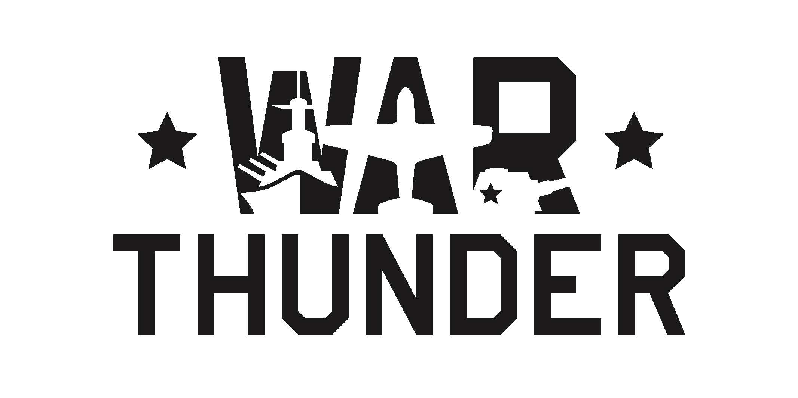
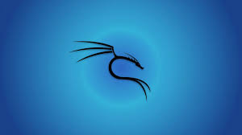

About Me
Im a person who is trying to specialize in multiple fields,
These include
- Business Management
- Full stack programmming
- and 3d modellling
- Tools related to business such as Excel, Power BI and SQL
- I also love ethical hacking (including the backend languages such as Bash, Powershell and Ruby
I love Drawing still life sketches and cycling. another thing that i love would be War Thunder as i'm an aviation enthusiast. Practical Physics and Chemicals hace a special palce in my heart.


I also love Formula 1 , i started loving it since 2021(Hamilton incident). I worship Max Verstappen

If you guys like hip hop music, i'm the guy you should hit up. Recenty Kali linux has attracted me.

I will never get bored if i'm handling any task that is related to these topics.
Sometimes I do become a workaholic if I love the work XD.
I also make and fly aero models.
I'm always open to learn more at any given time.
I will open a youtube channel once I upgrade to a better PC wth better specs. The content will be pure qulity and fun
Hit me up if you feel so!!!
Back